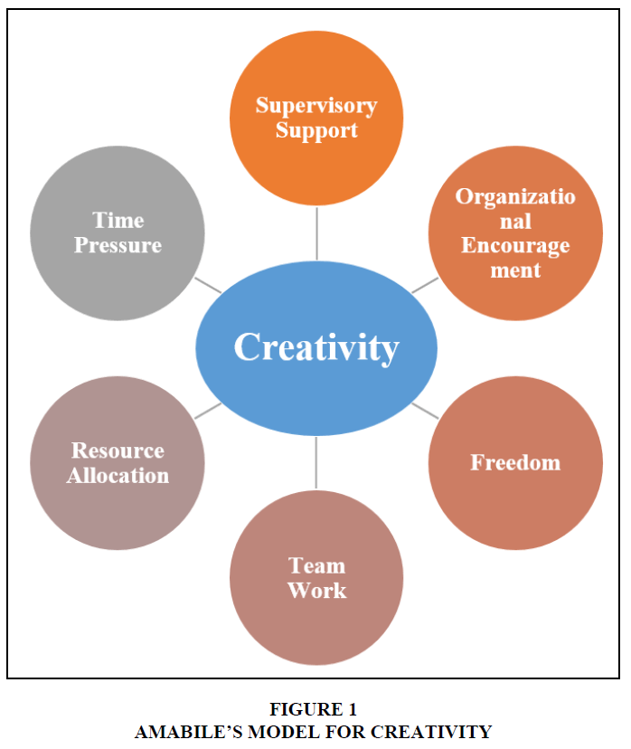

The Role of Creativity in Achieving Success
By: Aaliyah
Introduction
As humans, we have an innate impulse for creativity. It is the reason we paint, sing, write, and invent. In many ways, creativity gives life meaning and purpose. But, did you know that creative thinking can also increase your chances of achieving success? The ability to think outside the box and come up with innovative solutions to problems is highly valued in today's economy. This subheading explores the role of creativity in achieving success, providing practical tips and inspiring examples of how to harness your creative potential to reach your goals. From famous entrepreneurs who relied on their creativity to build successful companies to everyday individuals who overcame obstacles with a little creativity, these stories illuminate the power of thinking differently. So, join us on this journey of discovery and learn how you can unleash your creativity to take your life or business to the next level.
ad space
What is Creativity?
Creativity has always been an essential factor when it comes to achieving success. But what exactly is creativity, and how does it play a part in your journey towards success?
At its core, creativity is the ability to come up with new and innovative ideas. It is the process of taking existing ideas, concepts, or knowledge and transforming them into something entirely new.
Creativity is not just limited to the arts or music; it plays a significant role in every aspect of our lives, including business, science, technology, and daily decision-making. Being creative allows you to approach challenges differently and find unique solutions that others may not have thought of.
Research has also shown that creativity can positively affect our overall well-being. A study conducted by the American Psychological Association found that people who engage in creative activities report feeling happier and more energetic.
So, why is creativity so important in achieving success? When you are creative, you will stand out from the crowd and differentiate yourself from others. You will be able to solve problems in a unique way, which can lead to increased innovation and productivity. Moreover, being creative requires you to think outside the box, which can lead to personal growth and development.
In conclusion, creativity is an integral part of achieving success. It allows you to approach challenges from a different perspective, and its application extends to all areas of life. So if you are looking to achieve success, embrace your creative side and let it guide you towards your goals.
ad space
The Connection between Creativity and Success
Creativity is often seen as a luxury or a talent that is reserved for artists and designers. However, research has shown that creativity is actually essential for success in a variety of fields. The connection between creativity and success is undeniable, and understanding how creativity can drive success is key to achieving your goals.
Studies have found that individuals who exhibit high levels of creativity are more likely to be successful in their careers than those who don't. This is because creativity allows people to think outside the box and come up with unique solutions to problems. Creative individuals are able to see things in new and different ways, which can lead to innovation and success.
One example of this is Steve Jobs, the late co-founder and CEO of Apple. He was known for his creative approach to business, which led to the creation of groundbreaking products such as the iPhone and the iPad. Jobs' ability to think differently and come up with innovative ideas was a major factor in Apple's success.
Creativity can also be beneficial in personal relationships. People who are creative are often better able to express themselves and communicate their feelings. This can lead to stronger, more meaningful relationships with others.
So, why is creativity so important for success? It all comes down to the fact that the world is constantly changing. In order to succeed in today's fast-paced, ever-changing world, you need to be able to adapt and think creatively. This means being willing to take risks, try new things, and think outside the box.
In conclusion, creativity is a vital factor in achieving success. Whether you're an entrepreneur, artist, or educator, incorporating creative thinking into your work and life can help you reach your goals and stand out in a crowded field. By understanding the connection between creativity and success, you can begin to harness the power of creativity in your own life and achieve greater success in everything you do.
ad space
Examples of Creativity Leading to Success
Innovation and originality are traits that can contribute significantly to one's success. Creativity is the driving force behind these traits, and it can manifest itself in various forms. From artistic expression to problem-solving, creativity is a fundamental aspect of any successful enterprise. In this article, we will explore some examples of how creativity has contributed to success in various areas. We will delve into the lives of successful entrepreneurs, artists, and professionals who have applied their creative abilities to achieve great success. We will analyze how they came up with their unique ideas, implemented them, and ultimately prospered. These examples will help you understand how creativity can be a game-changer in your life and inspire you to explore your own creative potential.
ad space
Developing Creativity to Achieve Success
In a world where information is constantly evolving, creativity is an important skill to acquire for success. But what is creativity? It is the ability to come up with out-of-the-box solutions to problems, to innovate, and think beyond the rules. In short, creativity means to think beyond the horizon.
Developing creativity is essential for success, especially in the 21st century. With technological advancements and changing work dynamics, creativity has become a vital ingredient in achieving success. It helps in boosting productivity, driving innovation, and in finding new strategies to solve problems.
To develop creativity, one must think beyond limits, challenge the status quo, and brainstorm for new ideas. Being creative is not just about artistic abilities, rather it is about innovation, design thinking, and approaching the world with a curious eye.
Through creative thinking, individuals can identify opportunities in their lives and in their work environment. Creativity also plays a key role in critical thinking, enabling individuals to analyze a situation and formulate a plan to achieve their goals.
In conclusion, developing creativity is crucial for success. It allows individuals to approach situations with a fresh perspective, find new solutions to complex problems, and contributes to innovation. Creativity can be developed through various means, such as curiosity, questioning, brainstorming, and experimenting. With creativity, the possibilities are endless, and the path to success can be paved.
ad space
Conclusion
As we wrap up our exploration of the role of creativity in achieving success, it's clear that creativity is not just a nice-to-have, but an essential ingredient for achieving extraordinary results. From entrepreneurs and artists to scientists and educators, those who embrace their creative impulses consistently outperform their peers and make a meaningful impact in their fields.
Throughout our journey, we've discovered that creativity is not limited to the realm of the arts, but is a vital skill for solving complex problems, generating innovative ideas, and adapting to change. We've also seen that creativity can be cultivated, and that anyone can develop their creative abilities with practice and persistence.
Moreover, creativity is not just about coming up with new ideas, but about using them to create value and impact in the world. Whether we are inventing new technologies, launching innovative products, or inspiring social movements, creativity is a catalyst for positive change.
In conclusion, by embracing our inner creativity, we can unleash our full potential and achieve our wildest dreams. So let's embrace the power of creativity, and let our imaginations run wild. Who knows what we might achieve?
ad space